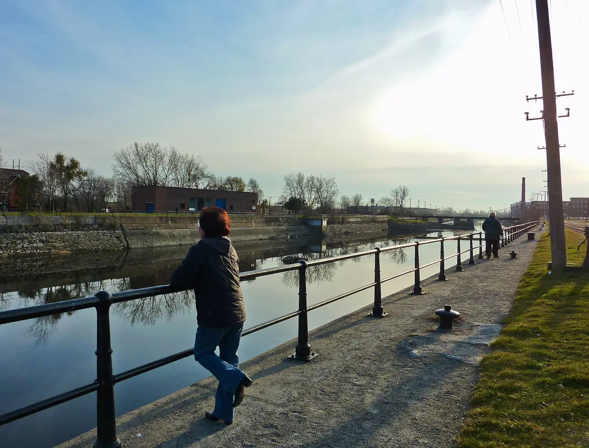

Le canal de Lachine, du Vieux-Port à Lachine
Mis à jour le 21 novembre 2026
Une piste à plat le long de l’eau, à travers l’histoire du Montréal industriel : écluses, usines de brique devenues lofts, marché Atwater, et le lac Saint-Louis au bout.

- Distance
- 14,5 km aller simple, du Vieux-Port à Lachine
- Dénivelé
- Presque nul : c’est plat
- Durée
- Environ 3 h 30 aller simple à pied, ou le tronçon de ton choix
- Difficulté
- Facile
- Départ
- Vieux-Port de Montréal, à la première écluse
- Saison
- Toute l’année
Carte

Profil d’altitude

Le parcours
Le canal commence au Vieux-Port, près de la première écluse, et file vers le sud-ouest sur environ 14,5 km jusqu’à Lachine. La piste suit l’eau tout du long, partagée avec les cyclistes : garde le côté piéton.
Les premiers kilomètres passent entre les anciennes usines, les silos et les ponts, dont beaucoup sont devenus logements et ateliers. Arrête-toi au marché Atwater pour un café ou un pique-nique au bord de l’eau, puis continue vers l’ouest, où le canal s’élargit et verdit.
Au bout, le canal s’ouvre sur le lac Saint-Louis, à Lachine. Pas besoin de tout faire : n’importe quel tronçon fait une belle marche, aller-retour.
Bon à savoir
- Choisis un tronçon. Du Vieux-Port au marché Atwater, c’est animé ; à l’ouest, plus tranquille.
- Piste partagée. Les cyclistes sont nombreux par beau temps : marche sur le côté et attention aux croisements.
- Le retour. Tu marches dans un seul sens ? Prévois ton retour en transport en commun avant de partir.
- Toute l’année. La piste est belle en toute saison, et une bonne marche d’hiver quand les sentiers sont glacés.
Photos



Garde la journée avec Arpente
Touche Enregistrer au départ et glisse ton iPhone dans ta poche. Arpente trace ton parcours et mesure la distance, la durée et le dénivelé, même écran éteint. Ajoute une photo et une note : la sortie reste dans ton journal. Découvre Arpente.
D’autres sorties
 Mont Albert11,6 km aller-retour par le versant nord, ou boucle de 17,3 km
Mont Albert11,6 km aller-retour par le versant nord, ou boucle de 17,3 km Acropole-des-DraveursEnviron 10,4 km aller-retour jusqu’au premier sommet, 11,2 km jusqu’au troisième
Acropole-des-DraveursEnviron 10,4 km aller-retour jusqu’au premier sommet, 11,2 km jusqu’au troisième Sentier de la StatueEnviron 7,6 km aller-retour, ou 3,6 km aller-retour jusqu’à la halte Bellevue
Sentier de la StatueEnviron 7,6 km aller-retour, ou 3,6 km aller-retour jusqu’à la halte Bellevue Mont RoyalEnviron 1,4 km du haut de la rue Peel au belvédère, environ 2 km jusqu’à la croix
Mont RoyalEnviron 1,4 km du haut de la rue Peel au belvédère, environ 2 km jusqu’à la croix
Le tracé de la carte est indicatif, calculé avec BRouter sur les données d’OpenStreetMap (© contributeurs OpenStreetMap, ODbL) ; altitudes SRTM. Il ne remplace pas la carte officielle du parc. Les distances, dénivelés et durées du tableau viennent des sources des parcs : vérifie les conditions avant de partir.